사회조사분석사-2급 (2016-08-21 기출문제)
1과목: 조사방법론 I
1. 다음 중 2차 자료를 이용하는 조사방법은?
- 현지조사
- 패널조사
- 실험
- 문헌조사
(정답률: 83%)

2. 관찰시기와 행동발생시기의 일치여부를 기준으로 관찰기법을 분류한 것은?
- 직접(direct)/간접(indirect) 관찰
- 자연적(natural setting)/인위적(contrived setting) 관찰
- 체계적(structured)/비체계적(unstructured) 관찰
- 공개적(undisguised)/비공개적(disguised) 관찰
(정답률: 68%)
3. 비참여관찰(non-participant observation)과 가장 거리가 먼 것은?
- 위장관찰
- 완전참여자 관찰
- 완전관찰자 관찰
- CCTV를 이용한 관찰
(정답률: 79%)
4. 폐쇄형 질문의 응답범주들이 갖추어야 할 조건과 가장 거리가 먼 것은?
- 응답범주 간의 상호배타성
- 응답범주의 사회규범성
- 응답범주들의 포괄성
- 응답범주의 명료성
(정답률: 76%)
5. 횡단연구(cross-sectional research)에 관한 설명으로 옳은 것은?
- 정해진 연구대상의 특정 변수값을 여러 시점에 걸쳐 연구한다.
- 패널연구에 비하여 인과관계를 더 분명하게 밝힐 수 있다.
- 여러 연구 대상들을 정해진 한 시점에서 연구, 분석하는 방법이다.
- 집단으로 구성된 패널에 대하여 여러 시점에 걸쳐 연구한다.
(정답률: 78%)
6. 경험적 연구방법에서 실험에 관한 설명으로 틀린 것은?
- 실험집단은 실험의 대상이 되는 집단이다.
- 분석집단이란 모든 다른 조건은 실험집단과 동일하나 실험자극을 주지 않는 집단이다.
- 사전검사란 실험자극을 주기 이전에 실험대상의 상태를 측정하는 것을 말한다.
- 실험의 방법은 자연과학에서 주로 사용되지만, 심리학이나 교육학 등 사회 과학에서도 사용된다.
(정답률: 70%)
7. 다음 중 빠른 시간 안에 개략적인 여론을 확인하는데 가장 적합한 조사방법은?
- 면접조사
- 우편조사
- 집단조사
- 전화조사
(정답률: 82%)
8. 이론에 관한 설명으로 틀린 것은?
- 이론은 수정되지 않는다.
- 사실을 논리적으로 설명한다.
- 개념 간의 관계를 보여준다.
- 일반화된 규칙성을 포함한다.
(정답률: 82%)
9. 질문지 작성 시 고려해야 할 사항을 모두 고른 것은?
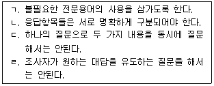
- ㄱ, ㄴ
- ㄱ, ㄴ, ㄷ
- ㄱ, ㄴ, ㄹ
- ㄱ, ㄴ, ㄷ, ㄹ
(정답률: 84%)
10. 다음 중 작업가설로 가장 적합한 것은?
- 한국사회는 양극화되고 있다.
- 대학생들은 독서를 많이 해야 한다.
- 경제성장은 사회혼란을 심화시킬 수 있다.
- 소득수준이 높아질수록 생활에 대한 만족도는 높아진다.
(정답률: 83%)
11. 경험적 연구의 조사설계에서 고려되어야 할 핵심적인 구성요소를 모두 고른 것은?
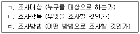
- ㄱ, ㄴ
- ㄱ, ㄴ, ㄷ
- ㄱ, ㄷ
- ㄴ, ㄷ
(정답률: 86%)
12. 연구를 진행할 때 거치게 되는 일반적인 단계로 가장 적합한 것은?
- 문제제기→연구설계→가설검증→가설설정→결론도출
- 가설설정→자료수집→가설검증→자료분석→결론도출
- 문제제기→연구설계→자료수집→자료분석→결론도출
- 가설설정→자료수집→연구설계→자료분석→결론도출
(정답률: 67%)
13. 우편조사와 비교하여 면접조사의 장점이 아닌 것은?
- 시간과 장소의 융통성
- 질문과정의 유연성
- 부가적인 정보수집 가능
- 복잡한 쟁점 질문 가능
(정답률: 82%)
14. 다음 중 동일한 표본을 대상으로 동일한 내용의 설문을 일정한 시간간격을 두고 계속해서 조사하는 설계는?
- 요인설계
- 교차분석설계
- 계속적 표본설계
- 패널조사설계
(정답률: 76%)
15. 획득하고자 하는 정보의 내용을 대략 결정한 이후 이루어져야 할 질문지 작성과정을 바르게 나열한 것은?
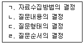
- ㄱ→ㄴ→ㄷ→ㄹ
- ㄴ→ㄷ→ㄹ→ㄱ
- ㄴ→ㄹ→ㄷ→ㄱ
- ㄷ→ㄱ→ㄴ→ㄹ
(정답률: 60%)
16. 사후시험 통제집단 설계(posttest-only control group design)의 장점과 단점을 바르게 짝지은 것은?
- 테스트 효과(testing effect)의 제거 - 실험집단과 통제집단의 동질성 확인 불가
- 모방효과(imitation effect)의 제거 - 외적타당성의 하락
- 플라시보효과(placebo effect)의 제거 - 조사반응성 통제 불가
- 성숙효과(maturation effect)의 제거 - 측정 수단 변화의 통제 불가
(정답률: 50%)
17. 질적연구에 관한 설명과 가장 거리가 먼 것은?
- 조사자와 조사 대상자의 주관적인 인지나 해석 등을 모두 정당한 자료로 간주한다.
- 조사결과를 폭넓은 상황에 일반화하기에 유리하다.
- 연구절차가 양적 조사에 비해 유연하고 직관적이다.
- 일반적으로 상호작용의 과정에 보다 많은 관심을 둔다.
(정답률: 72%)
18. 다음에서 설명하고 있는 실험설계는?
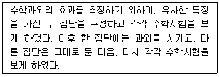
- 집단비교설계
- 솔로몬 4집단설계
- 통제집단 사후측정설계
- 통제집단 사전사후측정설계
(정답률: 72%)
19. 다음에서 설명하고 있는 것은?
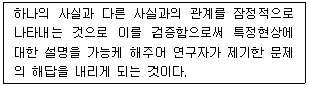
- 관찰
- 연구문제
- 인과관계
- 가설
(정답률: 74%)
20. 양적연구와 비교한 질적연구에 관한 설명으로 옳은 것은?
- 일반화의 가능성이 높다.
- 연역적 방법으로 자료를 분석한다.
- 변수 간의 관계 검증, 이론 검증 등에 유용하게 활용될 수 있다.
- 자료수집 단계와 자료분석 단계가 분명히 구별되지 않는다.
(정답률: 63%)
21. 변수들 간의 인과성 검증에 대한 설명으로 옳은 것은?
- 인과성은 두 변수의 공변성 여부에 따라 확정된다
- ‘가난한 사람들은 무계획한 소비를 한다.’ 라는 설명은 시간적 우선성 원칙에 부합한다
- 독립변수와 종속변수 사이의 인과관계는 제3의 변수가 통제되지 않으면 허위적일 수 있다
- 실험설계는 인과성 규명을 목적으로 하지 않는다
(정답률: 68%)
22. 소시오메트리(sociometry)에 관한 설명으로 틀린 것은?
- 사람들의 대인관계에 대한 조사연구방법이다.
- 네트워크 분석과 관련이 있다.
- 델파이 조사방법을 준용한다.
- 주관적 경험을 통한 현상학적 접근으로 집단의 구조를 이해하려 한다.
(정답률: 57%)
23. 다음( )안에 알맞은 것은?
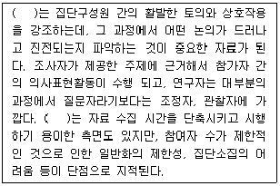
- 델파이조사
- 초점집단조사
- 사례연구조사
- 집단실험설계
(정답률: 71%)
24. 면접조사와 원활한 자료수집을 위해 조사자가 응답자와 인간적인 친밀 관계를 형성하는 것은?
- 라포(rappot)
- 사회화(socialization)
- 조작화(poerationalization)
- 개념화(conceptualization)
(정답률: 83%)
25. 다음 중 대규모 모집단의 특성을 기술하는 데 특히 유용한 방법은?
- 참여관찰(participant observation)
- 표본조사(sample survey)
- 유사실험(quasi-experiment)
- 내용분석(contens analysis)
(정답률: 79%)
26. 학술지에 “비행의 결정요인에 대한 연구 : 소년원 재소자를 중심으로”라는 제목의 논문이 실렸다. 제목을 보고 알 수 있는 것은?
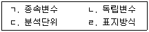
- ㄱ, ㄴ
- ㄷ, ㄹ
- ㄱ, ㄷ
- ㄴ, ㄹ
(정답률: 68%)
27. “가설 → 조작화 → 관찰 → 검증” 단계를 거치는 전통적인 과학적 접근법은?
- 연역적 방법
- 귀납적 방법
- 추리적 방법
- 철학적 방법
(정답률: 72%)
28. 조사연구에 관한 설명으로 틀린 것은?
- 가설은 이론이 맞다면 실제 세상에서 관찰되어야만 하는 것을 예측한다.
- 양적 연구방법은 정확하고 일반화 가능한 통계적 결과물의 산출을 강조하며 주로 보편법칙적 목적에 적합하다.
- 실증주의적 연구가 인과관계 설명이 목적이라면 해석주의적 연구는 현상에 대한 이해가 목적이다.
- 인과모델에서 보편법칙모델은 가능한 많은 원인요인을 사용해 특정 사례에 관한 모든 것을 이해하고자 한다.
(정답률: 47%)
29. 집단조사의 장점과 거리가 먼 것은?
- 비용과 시간을 절약할 수 있다.
- 질문 문항에 대한 오해를 줄일 수 있다.
- 면접방식과 자기기입의 방식을 조합하여 실시할 수 있다.
- 중립적인 응답의 가능성을 높일 수 있고, 집단을 위해 바람직하다고 생각되는 응답을 할 수 있다.
(정답률: 60%)
30. 단일사례실험연구(단일사례연구)에 관한 설명으로 옳은 것은?
- 외적타당도가 높다.
- 실험적 처치를 필요로 하지 않는다.
- 개입의 효과를 관찰하는 것이 주요 목적이다.
- 외생변수를 쉽게 통제할 수 있다.
(정답률: 43%)
2과목: 조사방법론 II
31. 사회조사에서 측정에 관한 설명으로 옳은 것은?
- 측정이란 사물이나 사건 등의 속성에 수치를 부과하는 것이다.
- 객관적으로 파악될 수 없는 태도변수는 측정이 불가능하다.
- 반복해서 측정하여도 동일한 결과를 얻을 수 없다는 가정을 전제한다.
- 측정하고자 하는 개념이 연구자에 따라 정의가 달라질 수 없다.
(정답률: 67%)
32. 구성타당도(construct validity)에 관한 옳은 설명을 모두 고른 것은?
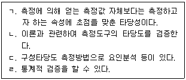
- ㄱ, ㄹ
- ㄴ, ㄷ, ㄹ
- ㄱ, ㄴ, ㄷ
- ㄱ, ㄴ, ㄷ, ㄹ
(정답률: 57%)
33. 비체계적 오류를 줄이는 방법과 가장 거리가 먼 것은?
- 측정항목 수를 가능한 한 늘린다.
- 조사대상자가 관심없는 항목도 측정한다.
- 중요한 질문은 2회 이상 동일한 질문이나 유사한 질문을 한다.
- 조사대상자가 모르는 내용은 측정하지 않는다.
(정답률: 70%)
34. 비확률표본추출방법과 비교한 확률표본추출방법에 관한 설명으로 틀린 것은?
- 무작위적 표본추출을 한다.
- 표본분석결과의 일반화에 제약이 있다.
- 비용과 시간이 많이 든다.
- 표본오차 추정이 가능하다.
(정답률: 69%)
35. 1000명으로 구성된 모집단에서 100명을 뽑아 연구를 하고자 할 때 첫번째 사람은 무작위로 추출하고 그 다음부터는 목록에서 매 10번째 사람을 뽑아 표본을 구성한 것은 어떤 표본추출방법에 해당하는가?
- 단순무작위표집(simple random sampling)
- 체계적 표집(systematic sampling)
- 층화표집(stratified random sampling)
- 편의표집(convinience sampling)
(정답률: 71%)
36. 할당표집(quota sampling)에 관한 설명으로 틀린 것은?
- 모집단이 갖는 특성의 비율에 맞추어 표본을 추출하는 방법이다.
- 선거와 관련된 조사나 일반적인 여론조사에서 많이 활용되고 있다.
- 명확한 표본 프레임이 없어도 사용할 수 있다.
- 표본추출과정에서 조사자의 편견이 개입될 수 있는 여지가 없다.
(정답률: 62%)
37. 일본에서 동경대학교 학생들의 지능검사를 하는데 중국어로 된 검사지를 사용하였을 경우 제기될 수 있는 측정상의 가장 큰 문제점은?
- 신뢰성 훼손
- 일관성 훼손
- 대표성 훼손
- 타당성 훼손
(정답률: 71%)
38. 개념(concept)에 관한 설명으로 틀린 것은?
- 개념은 이론의 핵심의 구성요소이다.
- 개념은 특정대상의 속성을 나타낸다.
- 개념 자체를 직접 경험적으로 측정할 수 있다.
- 개념의 역할은 실제연구에서 연구방향을 제시해준다.
(정답률: 67%)
39. 측정 오류에 관한 설명으로 틀린 것은?
- 체계적 오류는 사회적 바람직성 편견, 문화적 편견과 관련이 있다.
- 무작위적 오류는 일관적 영향 패턴을 가지지 않고 측정을 일관성 없게 만든다.
- 측정의 신뢰도는 체계적 오류와 관련성이 크고, 측정의 타당도는 무작위적 오류와 관련성이 크다.
- 측정의 오류를 피하기 위해 간과했을 수도 있는 편견이나 모호함을 찾아내기 위해 동료들의 피드백을 얻는다.
(정답률: 72%)
40. 다음 사례의 표본추출방법은?
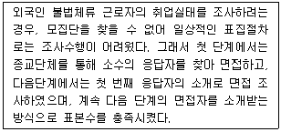
- 할당표집(quata sampling)
- 군집표집(cluster sampling)
- 편의표집(comvenience sampling)
- 눈덩이표집(smowball sampling)
(정답률: 83%)
41. 청소년 비행에 관하여 연구할 때 조작적 정의(operational definition)단계에 해당하는 것은?
- 사전(dictionary)을 참고하여 비행을 명확히 정의 한다.
- 청소년의 비행에 대한 기존 연구결과를 정리한다.
- 비행관련 척도를 탐색 후 선정한다.
- 비행청소년의 현황을 파악한다.
(정답률: 54%)
42. A항공사에서 자사의 마일리지 사용자 중 최근 1년 동안 10만 마일 이상 사용자들을 모집단으로 하면서 자사 마일리지 카드 소지자 명단을 표본프레임으로 사용하여 전체에서 표본추출을 할 때의 표본프레임 오류는?
- 모집단이 표본프레임내에 포함되는 경우
- 표본프레임이 모집단내에 포함되는 경우
- 모집단과 표본프레임의 일부분만이 일치하는 경우
- 모집단과 표본프레임이 전혀 일치하지 않는 경우
(정답률: 59%)
43. 문항 상호간에 어느 정도 일관성을 가지고 있는가를 측정하는 방법으로 크론바하의 알파값을 산출하는 방법은?
- 재조사법
- 복수양식법
- 반분법
- 내적일관성법
(정답률: 72%)
44. 다음 중 표본오류의 크기에 영향을 미치는 요인과 가장 거리가 먼 것은?
- 문항의 무응답
- 표본의 크기
- 모집단의 분산 정도
- 표본추출방법
(정답률: 52%)
45. 측정의 수준이 바르게 짝지어진 것은?
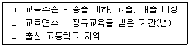
- ㄱ : 명목측정, ㄴ : 서열측정, ㄷ : 등간측정
- ㄱ : 등간측정, ㄴ : 서열측정, ㄷ : 비율측정
- ㄱ : 서열측정, ㄴ : 등간측정, ㄷ : 명목측정
- ㄱ : 서열측정, ㄴ : 비율측정, ㄷ : 명목측정
(정답률: 68%)
46. 측정의 수준에 관한 설명으로 틀린 것은?
- 비율측적은 절대영점이 존재한다.
- 등간측정은 측정단위 간 등간성이 유지된다.
- 서열측정과 등간측정은 등수, 서열관계를 알 수 있다.
- 등간측정은 측정치 간의 유의미한 비율계산이 가능하다.
(정답률: 71%)
47. 다음 ( )에 알맞은 것은?
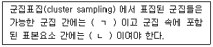
- ㄱ : 동질적, ㄴ : 동질적
- ㄱ : 동질적, ㄴ : 이질적
- ㄱ : 이질적, ㄴ : 동질적
- ㄱ : 이질적, ㄴ : 이질적
(정답률: 63%)
48. 사회조사에서 신뢰도가 높은 자료를 얻기 위한 방안과 가장 거리가 먼 것은?
- 면접자들의 면접방식과 태도와 일관성을 유지한다.
- 동일한 개념이나 속성을 측정하기 위한 항목이 없어야 한다.
- 연구자가 임의로 응답자에 대한 가정을 해서는 안된다.
- 누구나 동일하게 이해하도록 측정항목을 구성한다.
(정답률: 81%)
49. 두 변수 간의 관계를 보다 정확하고 명료하게 이해할 수 있도록 밝혀주는 역할을 하는 검정변수가 아닌 것은?
- 매개변수(intervening variable)
- 구성변수(component variable)
- 예측변수(predictor variable)
- 선행변수(antecedent variable)
(정답률: 49%)
50. 다음 중 표본 추출과정에서 가장 먼저 해야 할 것은?
- 모집단의 확정
- 표본크기의 결정
- 표집프레임의 선정
- 표본추출방법의 결정
(정답률: 78%)
51. 개념적 정의의 예로 적합하지 않은 것은?
- 무게 → 물체의 중량
- 불안 → 주관화된 공포
- 지능 → 추상적 사고능력 또는 문제해결 능력
- 결혼만족 → 배우자에게 아침을 차려준 횟수
(정답률: 79%)
52. 표본크기와 표집오차에 관한 옳은 설명을 모두 고른 것은?
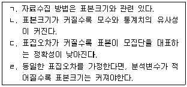
- ㄱ, ㄴ, ㄷ
- ㄱ, ㄷ
- ㄴ, ㄹ
- ㄱ, ㄴ, ㄷ, ㄹ
(정답률: 49%)
53. 표본의 크기에 관한 설명으로 틀린 것은?
- 모집단의 동질성이 높으면 표본의 크기는 작아진다.
- 독립변수의 카테고리가 세분화될수록 표본의 크기는 커진다.
- 사용하고자 하는 변수의 수가 많을수록 표본수가 커져야 한다.
- 표본의 크기가 같을 경우 단순무작위표본추출방법보다 층화표본추출방법을 사용하면 표본오차가 커진다.
(정답률: 67%)
54. 다음 중 표집틀(sampling frame)이 모집단(population)보다 큰 경우는?
- 한국대학교 학생을 한국대학교 학생등록부를 이용해서 표집하는 경우
- 한국대학교 학생을 교문 앞에서 임의로 표집하는 경우
- 한국대학교 학생을 서울지역 휴대포 가입자 명부를 이용해서 표집하는 경우
- 한국대학교의 체육과 학생을 한국대학교 학생등록부를 이용해서 표집하는 경우
(정답률: 47%)
55. 모집단의 전체 구성요소를 파악한 다음 개별요소에 대하여 일렬번호를 부여하고, 난수표를 이용하여 필요한 수의 표본을 추출하는 방법은?
- 단순무작위표집(simple random sampling)
- 체계적 표집(systematic sampling)
- 층화표집(stratified random sampling)
- 군집표집(cluster sampling)
(정답률: 59%)
56. 다음 사례의 측정수준에 관한 설명으로 옳은 것은?
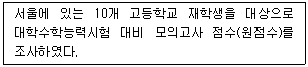
- 중앙값보다 평균값이 크다.
- 덧셈과 뺄셈 연산만이 가능하다.
- 사칙연산이 가능하고 모든 통계값의 산출이 가능하다.
- 측정값은 수량의 의미를 갖고 있지 않으며 일정한 특성을 대표하는 값을 임의로 부여한 것이다.
(정답률: 71%)
57. 측정의 신뢰도와 타당도에 관한 설명으로 옳은 것은?
- 동일인이 한 체중계로 여러 번 몸무게를 측정하는 것은 체중계의 타당도와 관련되어 있다.
- 측정도구의 높은 신뢰성이 측정의 타당성을 보증하지 않는다.
- 측정도구의 타당도를 검사하기 위해 반분법을 활용한다.
- 기준관련 타당도는 측정도구의 대표성에 관한 것이다.
(정답률: 70%)
58. 다음은 어떤 척도에 관한 설명인가?
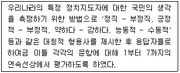
- 서스톤척도
- 거트만척도
- 리커트척도
- 의미분화척도
(정답률: 73%)
59. 다음 중 확률표본추출방법이 아닌 것은?
- 단순무작위표집(simple random sampling)
- 판단표집(judgement sampling)
- 군집표집(cluster sampling)
- 체계적 표집(systematic sampling)
(정답률: 75%)
60. 척도에 관한 설명으로 옳은 것은?
- 리커트척도는 등간 - 비율수준의 척도이다.
- 서스톤척도는 모든 문항에 대해 동일한 척도 값을 부여한다.
- 소시오메트리(sociometry)는 집단 간의 심리적 거리를 측정한다.
- 거트만척도에서는 일반적으로 재생계수가 0.9 이상이면 적절한 척도로 판단한다.
(정답률: 53%)
3과목: 사회통계
61. 다음 설명 중 옳은 것은?
- 신뢰구간은 넓을수록 바람직하다.
- 검정력은 작을수록 바람직하다.
- 표본의 수는 통계적 추론에는 영향을 미치지 않는 표본조사시의 문제이다.
- 모든 다른 조건이 동일하다면 표본의 수가 클수록 신뢰구간의 길이는 짧아진다.
(정답률: 53%)
62. 환자군과 대조군의 혈압을 비교하고자 한다. 각 집단에서 혈압은 정규분포를 따르며, 각 집단의 혈압의 분산은 같다고 한다. 환자군 12명, 대조군 12명을 추출하여 평균을 조사하였다. 두 표본 t-검정을 실시할 때 적합한 자유도는?
- 11
- 12
- 22
- 24
(정답률: 50%)
63. 성별 평균소득에 관한 설문조사자료를 정리한 결과, 집단 내 평균제곱(mean squares within groups)은 50, 집단 간 평균제곱(mean squares between groups)은 25로 나타났다. 이 경우에 F값은?
- 0.5
- 2
- 25
- 75
(정답률: 46%)
64. 두 변수 간의 상관계수 값으로 옳은 것은?
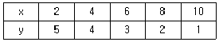
- -1
- -0.5
- 0.5
- 1
(정답률: 34%)
65. 어느 대학교에 재학생 전체의 45%가 남학생이며, 남학생 중에는 70%, 여학생 중에는 40%가 흡연을 하고 있다고 한다. 이 대학교의 재학생 중 임의로 한 명을 선택하여 조사한 결과 흡연자임을 알았다. 이 학생이 여학생일 확률은?
- 0.5887
- 0.4112
- 0.5350
- 0.4560
(정답률: 58%)
66. K고교에서 3학년 학생 300명중에서 상위 30명의 학생으로 우수반을 편성하고자 한다. 우수반 선정은 모의 수능점수만을 선발기준으로 하였다. 300명의 모의수능점수는 평균이 320점이고, 표준편차가 10점인 정규분포에 따른다고 한다. 우수반에 들어가려면 모의수능점수가 최소 몇 점 이상 되어야 하는가? (단, P(Z ＞ 1.28) = 0.1)
- 330점 이상
- 333점 이상
- 335점 이상
- 339점 이상
(정답률: 46%)
67. 귀무가설이 참임에도 불구하고 이를 기각하는 결정을 내리는 오류를 무엇이라고 하는가?
- 제1종 오류
- 제2종 오류
- 제3종 오류
- 제4종 오류
(정답률: 67%)
68. 20개로 이루어진 자료를 순서대로 나열하면 다음과 같다. 이 자료의 중위수와 사분위 범위(interquartile range)의 값을 순서대로 나열한 것은?
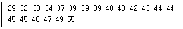
- 40, 7
- 40, 8
- 41, 7
- 41, 8
(정답률: 34%)
69. 다음 일원분산분석표의 ( )에 알맞은 값은?
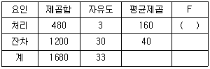
- 4.0
- 10.0
- 2.5
- 0.4
(정답률: 65%)
70. 기계A에서 제품의 40%를, 기계B에서 제품의 60%를 생산한다. 기계A에서 생산된 제품의 불량률은 1%이고 기계B에서 생산된 제품의 불량률은 2%라면, 전체 불량률은?
- 1.5%
- 1.6%
- 1.7%
- 1.8%
(정답률: 62%)
71. 어느 공장에서는 전자제품의 부품을 생산하는데 생산하는 부품의 약 10%가 불량품이라고 한다. 이 공장에서 생산하는 부품 10개를 임의로 추출하여 검사할 때, 불량품이 2개 이하일 확률을 다음 누적확률분포표를 이용하여 구하면?
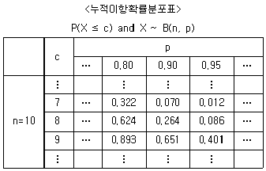
- 0.070
- 0.264
- 0.736
- 0.930
(정답률: 22%)
72. 다음 ( )에 알맞은 것은?
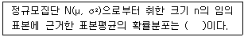
- N(μ, σ2)
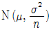
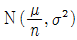
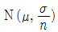
(정답률: 62%)
73. 중회귀식을 행렬로 표시하면 다음과 같다. 여기서 각각 Y는 n×1, X는 n×p, β는 p×1, ε는 n×1 행렬이다. 최소제곱법에 의한 회귀계수 β의 추정량 β를 바르게 나타낸 것은? (단, XT는 X의 전치행렬이다.)
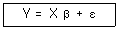
- β = (XTX)-1XTY
- β = (XTX)-1XTY(XTX)-1
- β = XTY(XTX)-1
- β = XT(XTX)-1Y
(정답률: 36%)
74. 크기가 10인 표본으로부터 얻은 회귀방정식은 y=2+0.3x이고, x의 표본평균이 2이고, 표본분산은 4, y의 표본평균은 2.6이고 표본분산은 9이다. 이 요약치로부터 x와 y의 상관계수는?
- 0.1
- 0.2
- 0.3
- 0.4
(정답률: 33%)
75. 단순회귀분석을 적용하여 자료를 분석하기 위해서 10쌍의 독립변수와 종속변수의 값들을 측정하여 정리한 결과 다음과 같은 값을 얻었다. 회귀모형 Yi=α+βxi+ε의 β의 최소제곱추정량을 구하면?
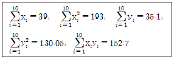
- 0.287
- 0.357
- 0.387
- 0.487
(정답률: 43%)
76. 피어슨의 대칭도를 대표치들 간의 관계식으로 바르게 나타낸 것은? (단,
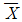
: 산술평균, Me : 중위수, Mo : 최빈수) – Mo = 3(Me –
– Mo = 3(Me –  )
)- Mo –
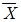
= 3(Mo – Me)  – Mo = 3(
– Mo = 3( – Me)
– Me)- Mo –
 = 3(Me – Mo)
= 3(Me – Mo)
(정답률: 55%)
77. 두 변량 중 X를 독립변수, Y를 종속변수로 하여 X와 Y의 관계를 분석하고자 한다. X가 범주형 변수이고 Y가 연속형 변수일 때 가장 적합한 분석방법은?
- 회귀분석
- 교차분석
- 분산분석
- 상관분석
(정답률: 45%)
78. 임의의 로트로부터 100개의 표본을 추출하여 측정한 결과 12개의 불량품이 나왔다. 로트의 불량률 p에 대한 95% 신뢰구간은?
- (0.04, 0.20)
- (0.06, 0.18)
- (0.08, 0.16)
- (0.10, 0.14)
(정답률: 43%)
79. 두 모집단의 모평균의 차에 관한 추론에서, 표본의 크기가 작고 모분산의 알려져 있지 않은 경우가 종종 발생한다. 이때 두 모집단의 분산이 동일하다고 가정하고 모분산에 대한 합동추정량을 구하면?
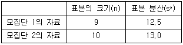
- 11.4
- 12.1
- 12.8
- 13.5
(정답률: 49%)
80. 어떤 처리 전후의 효과를 분석하기 위한 대응비교에서 자료의 구조가 다음과 같다. 일반적인 몇 가지 조건을 가정할 때 처리 이전과 이후의 평균에 차이가 없다는 귀무가설을 검정하기 위한 검정통계량
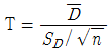
은 t분포를 따른다. 이때 자유도는? (단,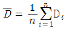
,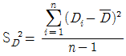
이다.)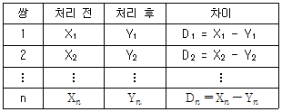
- n-1
- n
- 2(n-1)
- 2n
(정답률: 51%)
81. 단순회귀모형 yi=β0+β1xi+εi에 대한 분산분석표가 다음과 같다. 설명변수와 반응변수가 양의 상관관계를 가질 때, H0 : β1 = 0 대 H1 : β1 ≠ 0을 검정하기 위한 t- 검정통계량의 값은?
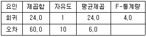
- -2
- -1
- 1
- 2
(정답률: 42%)
82. 특정 제품의 단위 면적당 결점의 수 또는 단위 시간당 사건 발생수에 대한 확률분포로 적합한 분포는?
- 이항분포
- 포아송분포
- 초기하분포
- 지수분포
(정답률: 68%)
83. 다음 설명 중 틀린 것은?
- 표본평균의 분포는 항상 정규분포를 따른다.
- 모집단의 평균이 μ라고 할 때, 표본평균의 기댓값은 μ이다.
- 모집단이 표준편차가 σ일 때, 크기가 n인 표본에서 표본평균의 표준편차는 복원추출인 경우 σ / √n이다.
- 추정량의 표준편차를 표준오차라 부른다.
(정답률: 40%)
84. X는 정규분포를 따르는 확률변수이다. P(X ＜ -1) = 0.16, P(X ＜ -0.5)=0.31, P(X ＜ 0) = 0.5 일 때, P(0.5 ＜ X ＜ 1)의 값은?
- 0.235
- 0.15
- 0.19
- 0.335
(정답률: 52%)
85. 상관계수에 관한 설명으로 옳은 것은?
- 두 변수간에 차이가 있는가를 나타내는 측도이다.
- 두 변수간의 분산의 차이를 나타내는 측도이다.
- 두 변수간의 곡선관계를 나타내는 측도이다.
- 두 변수간의 선형관계 정도를 나타내는 측도이다.
(정답률: 58%)
86. 독립변수가 5개인 100개의 자료로 회귀식을 추정할 때 잔차의 자유도는?
- 4
- 5
- 94
- 95
(정답률: 34%)
87. 확률변수 X의 기댓값이 5이고, 확률변수 Y의 기댓값이 10일 때, 확률변수 X+2Y의 기댓값은?
- 10
- 15
- 20
- 25
(정답률: 62%)
88. 표본자료로부터 추정한 모평균 μ에 대한 95% 신뢰구간이 (-0.042, 0.522) 일 때, 유의수준 0.⑤에서 귀무가설 H0 : μ = 0 대 대립가설 H1 : μ ≠ 0 의 검증 결과는 어떻게 해석할 수 있는가?
- 신뢰구간과 가설검증은 무관하기 때문에 신뢰구간을 기초로 검증에 대한 어떠한 결론도 내릴 수 없다.
- 신뢰구간이 0을 포함하기 때문에 귀무가설을 기각할 수 없다.
- 신뢰구간의 상한이 0.522로 0보다 상당히 크기 때문에 귀무가설을 기각해야 한다.
- 신뢰구간을 계산할 때 표준정규분포의 임계값을 사용했는지 또는 t분포의 임계값을 사용했는지에 따라 해석이 다르다.
(정답률: 54%)
89. 다음은 회귀분석 결과를 정리한 분산분석표이다. ( )에 알맞은 ㄱ, ㄴ, ㄷ, ㄹ 값을 순서대로 나열한 것은?
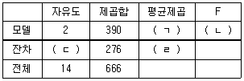
- (195, 8.48, 11, 21)
- (195, 8.48, 12, 23)
- (190, 5.21, 11, 21)
- (190, 5.21, 12, 23)
(정답률: 66%)
90. 다음은 특정한 4개의 처리수준에서 각각 6번의 반복을 통해 측정된 반응값을 이용하여 계산한 값들이다. 이를 이용하여 계산된 평균오차제곱합(MSE)은?
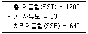
- 28.0
- 5.29
- 31.1
- 213.3
(정답률: 47%)
91. 3×4 분할표 자료에 대한 독립성검정을 위한 카이제곱통계량의 자유도는?
- 12
- 10
- 8
- 6
(정답률: 60%)
92. 어느 고등학교에서 임의로 50명의 학생을 추출하여 몸무게(㎏)와 키(㎝)를 측정하였다. 이들의 몸무게와 키의 산포의 정도를 비교하기에 가장 적합한 통계량은?
- 평균
- 상관계수
- 변이(변동) 계수
- 분산
(정답률: 55%)
93. 표본크기가 3인 자료 x1, x2, x3의 평균
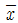
= 10, 분산 s2 = 100이다. 관측값 10이 추가되었을 때, 4개 자료의 분산 s2은? (단, 표본분산 s2은 불편분산임)- 110/3
- 50
- 55
- 200/3
(정답률: 48%)
94. 성인의 흡연율은 40%로 알려져 있다. 금연의 중요성을 강조하는 공익 광고를 실시하면 흡연율이 감소할 것이라는 주장을 확인하기 위한 귀무가설 H0와 대립가설 H1은?
- H0 : p = 0.4, H1 ≠ 0.4
- H0 : p ＜ 0.4, H1 ≥ 0.4
- H0 : p ＞ 0.4, H1 ≤ 0.4
- H0 : p = 0.4, H1 ＜ 0.4
(정답률: 61%)
95. 다음 중 유의수준에 대한 설명으로 옳은 것은?
- 검정을 할 때 기준이 되는 것으로 제1종의 오류를 허용하는 확률범위이다.
- 유의수준은 제2종의 오류를 허용하는 확률 범위이다.
- 유의수준이 정해지면 단측검정과 양측검정에서 같은 임계값이 사용된다.
- 보통 0.⑤와 0.01이 많이 쓰이며, 0.⑤에서 채택된 귀무가설이 0.01에서 기각될 수도 있다.
(정답률: 46%)
96. 갑작스런 홍수로 인하여 어느 지방이 많은 피해를 입어 제방을 건설하고자 할 경우 그 높이를 어떻게 결정하는 것이 타당한지를 통계적으로 추정할 때 필요한 통계량은?
- 평균
- 최빈값
- 중위수
- 최대값
(정답률: 47%)
97. 측도의 단위가 관측치의 단위와 다른 것은?
- 평균
- 중앙값
- 표준편차
- 분산
(정답률: 44%)
98. 선형회귀분석에서의 모형에 대한 가정으로 틀린 것은?
- 독립변수 X와 종속변수 Y사이에는 선형적인 관계를 가정한다
- 오차항은 평균이 0인 정규분포를 가정한다
- 오차항의 분산은 σ2으로 일정하다
- 결정계수 R2=1이다
(정답률: 46%)
99. 어느 버스 정류장에서 매시 0분, 20분에 각 1회씩 버스가 출발한다. 한 사람이 우연히 이 정거장에 와서 버스가 출발할 때까지 기다릴 시간의 기댓값은?
- 15분 20초
- 16분 40초
- 18분 00초
- 19분 20초
(정답률: 48%)
100. 어느 여론조사기관에서 고등학교 학생들의 흡연율을 조사하고자 한다. 95% 신뢰수준에서 흡연율 추정의 오차한계가 2% 이내가 되도록 하려면 표본의 크기는 최소 얼마이어야 하는가? (단, 표준정규분포를 따르는 확률변수 Z에 대해 P(Z ＞ 1.96)=0.025를 만족한다.)
- 4321
- 5221
- 4201
- 2401
(정답률: 45%)